1974
Date
Cover
Contents/Notes
Apr 1974
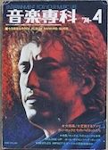
Content unknown. I believe this is the earliest appearance of Queen in Ongaku Senka.
Jul 1974
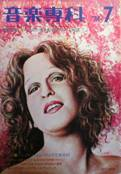
Content unknown.
Sep 1974
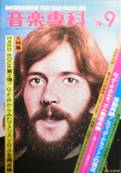
Content unknown.
1975
Date
Cover
Contents/Notes
Apr 1975
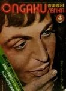
Special Feature: All about Queen! Color photos
May 1975
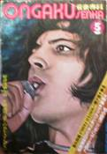
• Queen is Best!
Cover + photospread
Cover + photospread
Jun 1975
• Queen Makes Us Be Good
• Queen Concert in Japan
• A Complete Report on Queen's Trip to Japan + Interview
Cover + both color & B&W photo spreads, notice of "Special Seat for Queen's Fan" sections in upcoming issues
• Queen Concert in Japan
• A Complete Report on Queen's Trip to Japan + Interview
Cover + both color & B&W photo spreads, notice of "Special Seat for Queen's Fan" sections in upcoming issues
Jul 1975
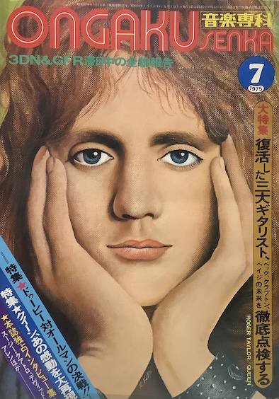
• Our Nice Brothers, Queen!!
• Special Seat for Queen's Fan: Relive their Trip to Japan!
Cover, B&W photos including a pic from the set of Star Sen
• Special Seat for Queen's Fan: Relive their Trip to Japan!
Cover, B&W photos including a pic from the set of Star Sen
Aug 1975
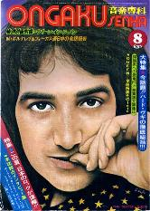
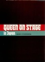
• Special Seat for Queen's Fan: Song Commentary pt. 1
Cover. Came with 16 page color photobooklet "QUEEN ON STAGE", which seems to be a relatively rare item.
Cover. Came with 16 page color photobooklet "QUEEN ON STAGE", which seems to be a relatively rare item.
Sep 1975
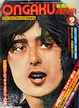
• Special Seat for Queen's Fan: Song Commentary pt. 2
Oct 1975
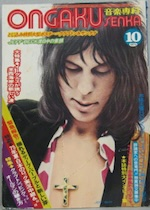
• Special Seat for Queen's Fan: Song Commentary pt. 3
Nov 1975
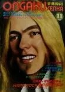
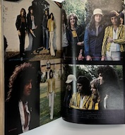
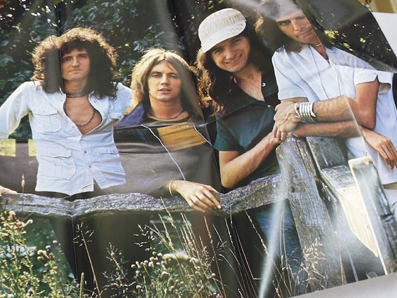
Queen Special Feature, came with Poster
Dec 1975
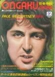
• Special Seat for Queen's Fan: Highlighting the Musicality of the Four Members
1976
Date
Cover
Contents/Notes
Feb 1976
Queen interview, B&W pics
Mar 1976
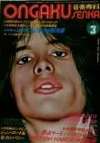
Brian May content, details unknown
Apr 1976
• Special Seat for Queen's Fan: Listening to their Latest Work, A Night at the Opera. Covershot
May 1976
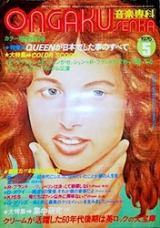
Queen Tour Report
Jun 1976
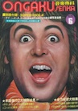
All about super idols
Jun 1976
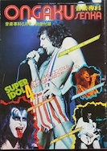
Super Idol Supplment: Queen at the Edinburgh Concert
Sep 1976
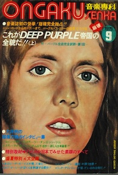
Cover, content unknown
Oct 1976
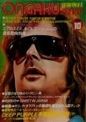
Content unknown
Nov 1976
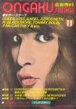
Content unknown
Dec 1976
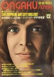
Photospread
1977
Date
Cover
Contents/Notes
Jan 1977
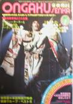
Cover, unknown if content inside
Feb 1977
• Queen's New Album, A Day at the Races!
Mar 1977
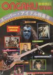
Super Idol Special Feature
Mar 1977
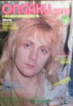
Cover, came with a pinup
May 1977
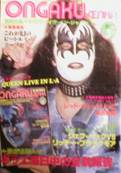
Queen's US Tour
Jul 1977
Cover, Roger Taylor feature. Originally came with a supplement, unknown if Queen-related.
Aug 1977
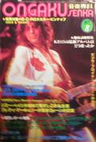
Content unknown
Nov 1977
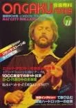
Brian May interview
Dec 1977
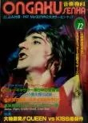
Content unknown
1978
Date
Cover
Contents/Notes
Jan 1978
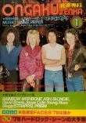
Cover only
Feb 1978
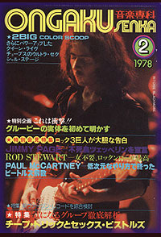
Queen Live
Mar 1978
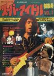
Super Idol Special Issue
Jul 1978
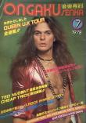
Queen UK Tour full report
Dec 1978
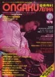
Brian May cover, content unknown
1979
Date
Cover
Contents/Notes
Apr 1979
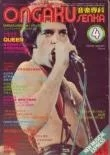
Cover, content inside but details unknown
Jun 1979
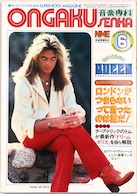
Welcome Queen! Japan Jazz Tour
Sep 1979
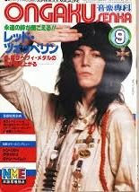
At least one color pinup of Freddie
1980s
Date
Cover
Contents/Notes
Feb 1980
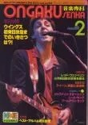
Content unknown
Aug 1980
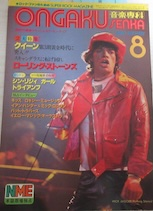
• Queen, Entering their Third Golden Age!
Oct 1980
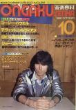
Content unknown
Apr 1981
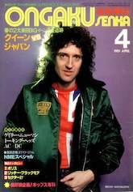
Japan Tour Info
Jan 1982
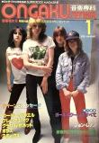
Freddie Mercury Interview: Queen's Message for 1982
Sep 1982
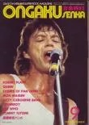
European Tour
Jan 1983
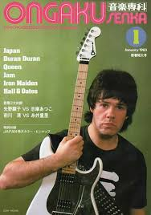
Content unknown
Feb 1983
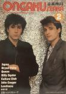
Queen Special Feature, details unknown
Jan 1984
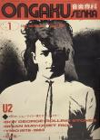
Brian May feature
May 1984
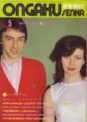
Content unknown
Feb 1985
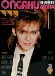
Freddie Mercury interview
Jul 1985
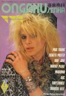
Feature, details unknown
May 1986
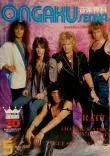
Brian May interview